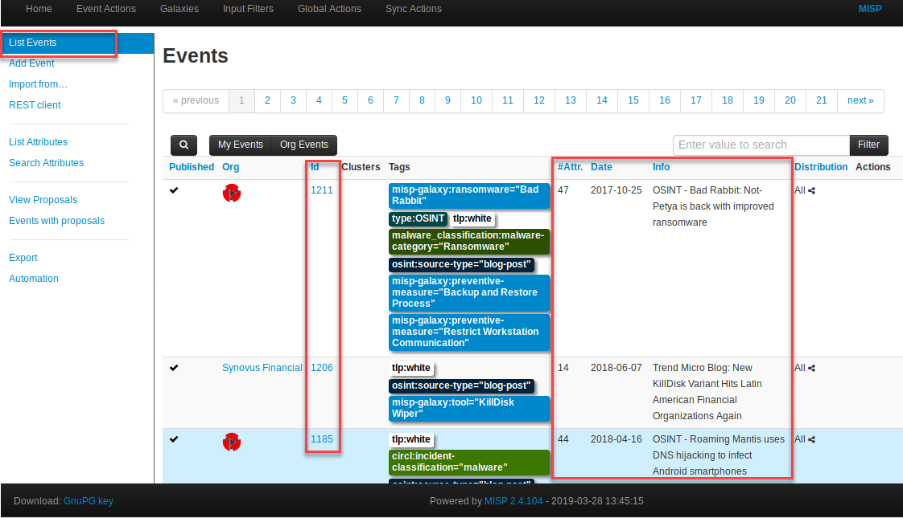
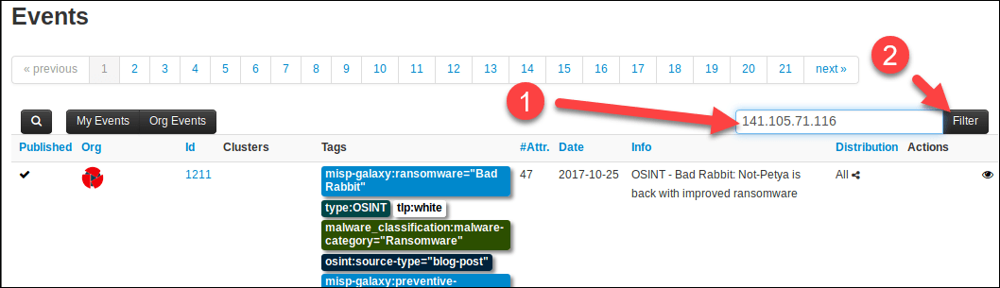
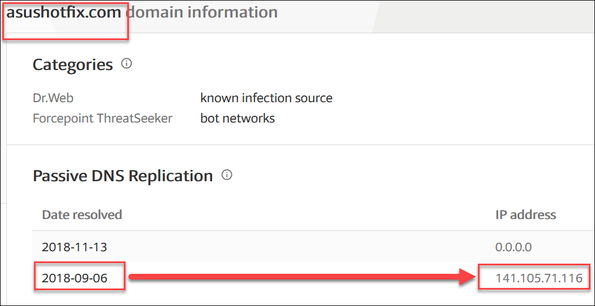
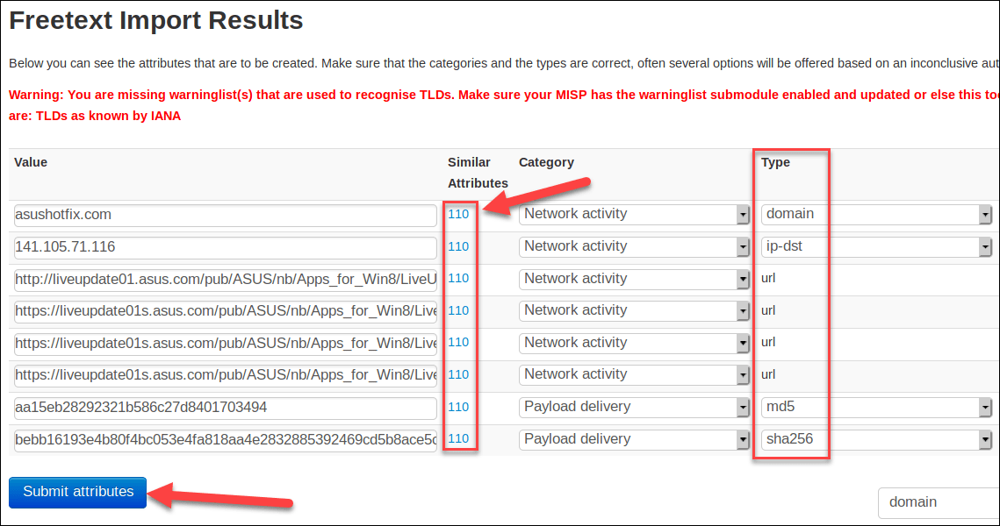
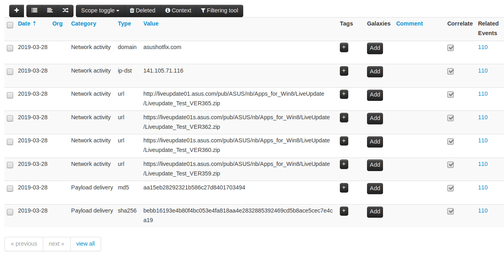
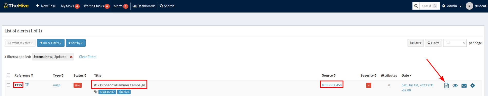

MISP
Objective
• Understand the role of the Threat Intelligence Platform in a SOC
• Use the MISP Threat Intelligence Platform to ingest threat data
• Create a MISP event with information from an open-source report
• Push information from a MISP event to TheHive for Triage
1. Log in to MISP and explore events
Firstly we will login into MISP
{kind=link}
After logging in, you will be taken to the main "Events" list in MISP - the catalog of all information that has been entered. Each row of this display is an "Event" in MISP - a separate piece of information about a specific happening or incident.
This MISP instance contains real threat data pre-populated by having MISP subscribe to the CIRCL OSINT feed. All of this information was categorized by the CIRCL group and distributed out to anyone who subscribes to it via MISP (MISP is designed for sharing threat intelligence in this manner).

Notice each event is heavily tagged for categorization and context, things like the source of the data, stages of an attack, and attribution are all used as tags in MISP. Each event also has its own unique ID number in the id column, a number of individual "attributes" (atomic indicators or notes) associated with it which shows in under the "#Attr" column, and the "date" and an "Info" summary of the event is also included in this view. There are 1200+ MISP events already entered from this feed to give you an idea of what a full threat intelligence platform can look like!
We're going to do a demonstration of the workflow for searching past events, and entering a new event of our own. The point is to get an idea of what a threat intelligence team will be doing, and how their workflow intersects with your own.
We will:
• Use our threat intelligence platform (MISP) to search for indicators from past events and OSINT sources that were downloaded from a partner organization (the CIRCL threat feed)
• Enter information from an OSINT attack report into a new MISP event
• Push our new event to the IMS (TheHive) so that it can be triaged by SOC analysts
• Create a new case in the IMS (TheHive), and push it back to MISP so that threat intelligence analysts will know what has actually been seen in the environment
INFO
We will focus on sending information in both directions from TIP to IMS, and IMS back to the TIP, because a closed loop of threat intelligence feeding investigation, and investigation feeding information back to the threat intelligence team is ESSENTIAL for successful security operations!
2. Use the Threat Intelligence Platform to find previously categorized indicators
Let's set the scene: Suppose at work one day you receive an alert from your IDS that says a user on your network connected to a known-malicious IP address:
141.105.71.116
Unfortunately the IP was on a list of IP addresses from a vendor tool that did not explain why it was bad or what type of attack it was connected to. Good thing we have a well-categorized set of threat intelligence, let's check in MISP to see if anything is known about this IP address.
To search for this IP in MISP, make sure the MISP tab is active in your browser window, enter the IP address into the filter box on the upper-right side of the event list and press Enter or select the "Filter" button.

Since the IP appears in only one event, MISP will automatically take you to the relevant event page.
{kind=link}
Uh oh! It appears this IP address may be associated with the ShadowHammer APT campaign! Reading on, it appears this campaign, discovered in March 2019, involved a supply-chain from computer manufacturer ASUS. Attackers had compromised ASUS servers and pushed out a backdoor system update to ASUS customers in an attempt to target specific unknown individuals. Scroll down in MISP to see additional detail on this event.
{kind=link}
From looking at this event, it appears the C2 channel for the backdoor was asushotfix[.]com and 141.105.71.116 was the IP address the domain resolved to at the time. Going to VirusTotal and searching the IP address can confirm this and also gives a potential way to time-scope the potential problem:

This means a device in your network may have been compromised and of interest to the ShadowHammer perpetrators! The information from VirusTotal also tells us that we should probably search for all IP traffic back to at least 2018-09-06 when the domain was known to point to that address.
NOTE
Notice having this information (which was automatically imported from a threat intelligence feed) allowed us to pivot directly from an IP address to a well-established attack, complete with domains, filenames, motivation and attribution of the attack! This is kind of quick information that external threat intelligence from outside the organization should facilitate on a regular basis.
While taking in information from automated sources is a great way to automatically gather threat data, sometimes we must create the entries ourselves or enter them from our own data. That is what we will do in the next step.
3. Publish an alert to the threat intelligence platform
What if we hadn't automatically received the ShadowHammer information through an automated feed and wanted to create the event in MISP for ourselves? Let's walk through the steps it would take to import the data into a new event.
To start creating a new event, click the Add Event button on the left side of the screen.
{kind=link}
This will bring you to a new window where you can enter the initial details about the new event.
{kind=link}
On this new screen the Date and Distribution can stay the same, but fill in the following details:
Threat Level: High
Analysis: Ongoing
Event Info: ShadowHammer Campaign
Then hit the Add button to create the event. This will bring you to the blank new event.
{kind=link}
On the new event screen, scroll down to the bottom of the page.
{kind=link}
There are no details for the event yet, so now we must add the IOCs ("attributes" as MISP calls them) from the attack. There are multiple ways to accomplish this in MISP, but the easiest for use will be to use the "Freetext Import Tool". Click on the button as shown in the picture above and a new empty box will appear.
{kind=link}
Using the Kaspersky article that the attack announcement originally came from (located https://securelist.com/operation-shadowhammer/89992/) we can extract the following attributes of interest from the bottom of the page.
asushotfix[.]com
141.105.71[.]116
http://liveupdate01.asus[.]com/pub/ASUS/nb/Apps_for_Win8/LiveUpdate/Liveupdate_Test_VER365.zip
https://liveupdate01s.asus[.]com/pub/ASUS/nb/Apps_for_Win8/LiveUpdate/Liveupdate_Test_VER362.zip
https://liveupdate01s.asus[.]com/pub/ASUS/nb/Apps_for_Win8/LiveUpdate/Liveupdate_Test_VER360.zip
https://liveupdate01s.asus[.]com/pub/ASUS/nb/Apps_for_Win8/LiveUpdate/Liveupdate_Test_VER359.zip
aa15eb28292321b586c27d8401703494
bebb16193e4b80f4bc053e4fa818aa4e2832885392469cd5b8ace5cec7e4ca19
These are the minimum details we would want to take from the article. Since threat intelligence platforms often feed SIEM watch lists for threat data matching, putting these IOCs in MISP would ideally cause any sighting of them in the environment to raise an alert from that moment on. Take the indicator list and paste it into the Freetext Import Tool box and hit "Submit".
{kind=link}
Freetext import is usually the easiest way to import indicators in any tool that supports it since it requires the minimum amount of work on the part of the analysts. There's nothing worse than having a tool that requires one at a time IOC entry when you have a large list of indicators. Fortunately MISP takes care of this for us and also automatically detects each attribute's data type! The next screen shows what MISP has detected.

Notice that MISP has successfully determined a category and data type for each line of our freetext import, wonderful, no manual entry! Not only that, but it has also already started to correlate these indicators with previous events. Notice the "Similar Attributes" column shows that MISP Event ID 110 has these same indicators - it is telling us we've already seen these indicators before! In this case, this is because of the ShadowHammer event we already have present in the system. In day to day data entry however, it's a great feature to know that at the time of import, you already have that attribute in a different event, giving you the extra context.
Since everything is correct, press the "Submit attributes" button to create the new items in the event. You will be taken back to the event page where it will tell you your freetext import submission is being processed in the background, and will be available in the event shortly.
{kind=link}
After 10 seconds or so, press the refresh page button in Firefox and then scroll down to the bottom of the event window. You should now see all your entered attributes faithfully recorded into the event! Notice still points out that event 110 is relevant to each data item, and even took care to properly format the attributes even though they were entered in "de-fanged" format - another nice touch!

To see the correlated events in a visual graph, scroll to the top of the page and select the View Correlation Graph option.
{kind=link}
This brings up a graph that will look something like this (note that these icons were rearranged for clarity, your graph may look different):
{kind=link}
Notice the two numbered events on the top and bottom, each of which are connected in the middle by an attribute. Since these two events are actually identical, every single attribute matches in this case. On large events with many attributes that are in common with multiple other events, this view can get hard to interpret, which is why it is sometimes easier to read this directly off each line in the attribute list.
Return to the previous window by scrolling to the top of the screen and selecting "View Event".
{kind=link}
4. Push your MISP event into TheHive
Now that we've created our event in MISP, let's connect it to the incident management platform.
TheHive and MISP specifically work quite well together and the integration between them is rather simple. It can work in two ways, first, events in MISP can be pushed into TheHive and will become new alerts to be triaged in the alert tab. Second, cases can be pushed from TheHive back into MISP to become new events. In this step, we'll get a look at how this works.
In the virtual machine, the link between MISP and TheHive functions as follows: Once per minute, TheHive will poll MISP and look for any new events that have had the tag "thehive" applied to them and in the "published" state. When such an event is found, all the details will be pulled into MISP into the event tab.
Let's add the tag "thehive" to our newly created event and see this process in action. Keep in mind that much of what we've done so far, may be a task your threat intelligence team is doing. Once the event is sent to TheHive as an alert, this is when SOC analysts would typically take over.
Scroll to the top of your new event in MISP and locate the Tags section and press the "+" button.
{kind=link}
This will cause the "Add a tag" window to appear. Select the "All Tags" button then type "thehive" into the box, which should auto-populate the yellow tag. Select it then press the submit button. You should now see the tag appear in the event.
{kind=link}
Next we must "publish" the event before it will be picked up by TheHive. "Publishing" is a designation MISP uses to show that a given event is finalized and ready to be seen by others and the wider the community you share with.
Select the "Publish Event" option in the sidebar on the left and select "Yes" to publish the event.
{kind=link}
Afterwards the publishing event is queued up for MISP. After a few moments hit the refresh button in the browser and the red bar will disappear because the event is now "published". Congratulations, we've created our published event in MISP and sent it to TheHive for triage!
The next step may take a minute or so to complete since TheHive only polls once every 60 seconds for new events. While you wait, switch tabs in your browser back to TheHive.
Once back in TheHive you should see the alert count increment in the top bar.
{kind=link}
Click on the Alert tab to bring up the new alert sent from MISP.

This is the alerts pane for TheHive, and there is the alert we sent from MISP. Notice the reference number on the left corresponds to the event ID in MISP, the title is the same as the event we made, the source system is noted, and the tags on the event traveled with the event.
To get more detail, select the icon that looks like a piece of paper at the end of the line. This brings up the Alert Preview screen - the screen you can use to see the detail on an alert and decide if it should be dropped as a false positive or accepted as a new case.
{kind=link}
Notice that TheHive automatically imports all the attributes entered in MISP as attributes, a very useful feature for reducing manual effort. To accept this alert as a case, scroll to the bottom of the Alert Preview page and select "Yes, Import".
{kind=link}
This will bring in the alert as a new case and leaves us where our last lab started - with a new case ready to be worked with observables already imported!
{kind=link}
If we had applied a "case template" at this point with the previous drop down box, the new case would be filled with tasks to complete and we would be ready to pick it up and run with it!
Conclusion
In this lab we saw the workflow for a threat intelligence program, created a new event inside it from OSINT data, and moved a threat intelligence event into an alert into our incident management system's alert queue. We also pointed out some of the everyday conveniences that should be present to make using these tools easy. Features like freetext import, auto-categorization of attribute types, and preservation of those items as the data moves from tool to tool seem small, but in a workflow you will use multiple times a day for years, the absence of these small items can be a big downer.
In this lab, we have:
• Seen how threat intel platforms store and correlate data
• Created a new entry in a threat intelligence platform
• Pushed the new event into an incident management system alert queue
• Accepted the alert into a new incident (a case in TheHive) for investigation